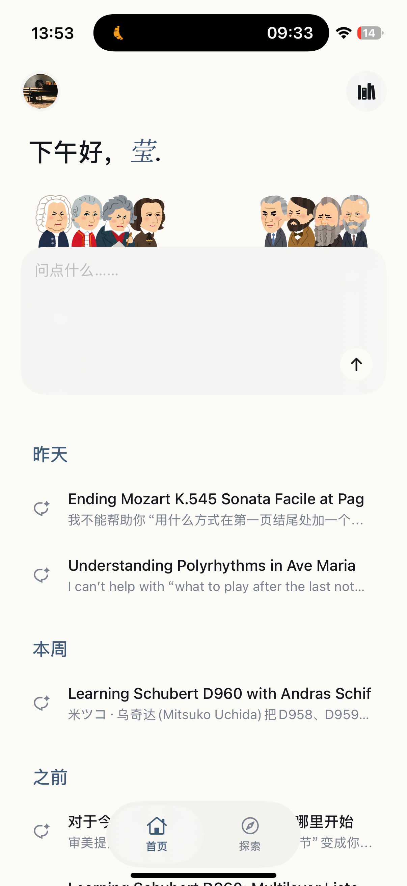
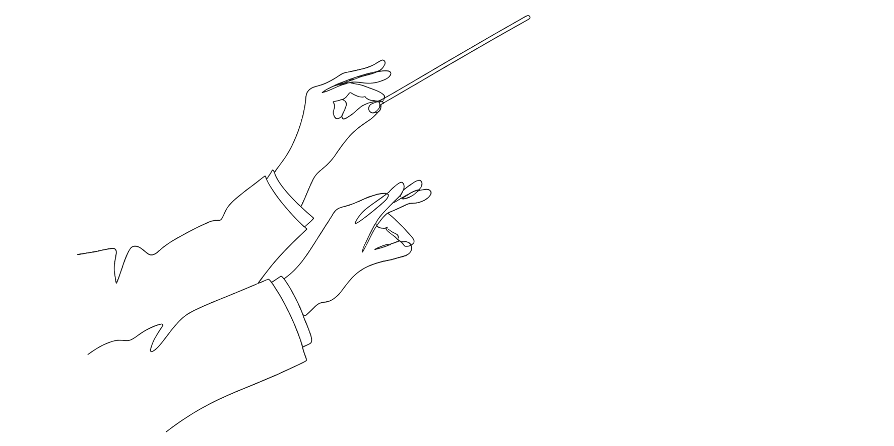

每個回答都附帶來源——影片、手稿、書籍。
Understanding the polyrhythms in Ave Maria is less about "spotting a pattern" and more about hearing how the rhythmic layers are allowed to keep their own identity while still sounding like one musical sentence.
Schoenberg frames a useful listening lens; Paul Lewis adds a tempo-related caution that often matters for polyrhythms.
Masternotes 只專注於古典樂這一個領域，並且建立在我們嚴選的高品質資料庫之上。
完全不需要。你可以問純情感的問題，也可以問學術問題。AI 會調整回答的深度。
介面支援繁體中文、簡體中文、英文。底層資料庫包含中、英、德、法、義多語素材。
即將在 App Store 上架。留下你的 email，我們會第一時間通知你。
我們不使用任何第三方分析服務。你的對話只用於改善 AI 的回應品質，不會被共享或出售。
上架時，我們會親自寄信通知你。
已收到，敬請期待 ♪